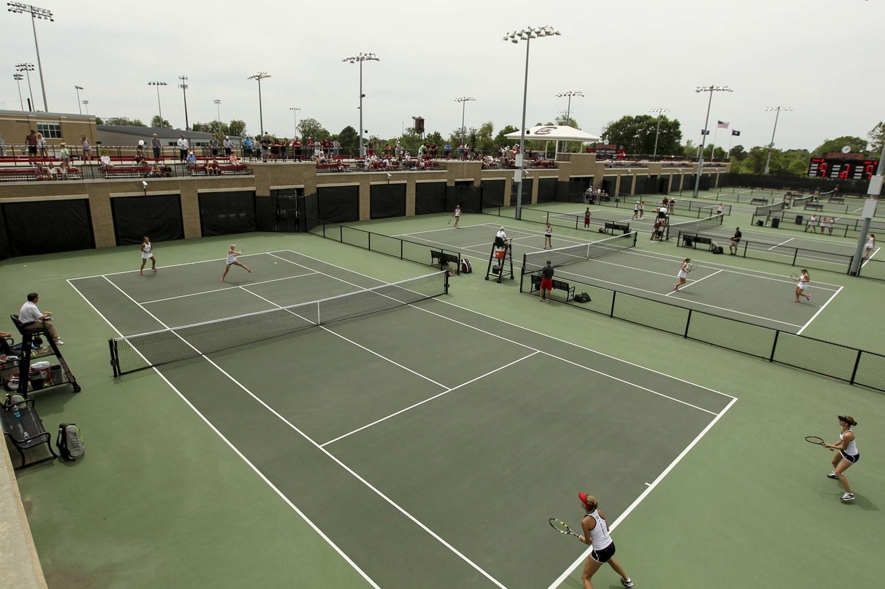

Tennis is one of my favorite activites to do in my free time, although it's hard to do in South Carolina heat. I started playing tennis at age 2 and was the captain of my varsity team in high school. Now I like to play on weekends or whenever I can with friends. Tennis can be difficult because it requires good technique, but when you learn to hit properly it is so fun!
First you should find nice courts to play on, and grab some gear. You only really need a racquet, tennis balls, and someone to play with. But, it is nice to have tennis/athletic clothes. Then you can start playing!/
| Name | Difficulty Level | Description |
|---|---|---|
| Overhead Shot | Beginner | This is like serving, but usually done at the net and is an attack shot out of the air. |
| Drop Shot | Advanced | This is hitting a shot very short on the court for the opponent, making it difficult for them to get to it. |
| Lob Shot | Beginner | This is just hitting a high, loopy shot usually to try to go over your opponent when they are at the net. |
| Slice Shot | Intermediate | This involves hitting the ball in an undercut way to control how it will spin and bounce, making your opponent have to crouch. |
